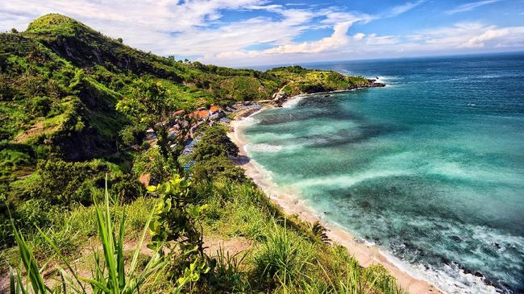
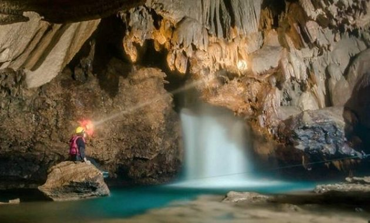

Sejarah

Nama Kebumen konon berasal dari kabumian yang berarti sebagai tempat
tinggal Kyai Bumi setelah dijadikan daerah pelarian Pangeran
Bumidirja atau Pangeran Mangkubumi dari Mataram pada 26 Juni 1677,
saat berkuasanya Sunan Amangkurat I. Sebelumnya, daerah ini sempat
tercatat dalam peta sejarah nasional sebagai salah satu tonggak
patriotik dalam penyerbuan prajurit Mataram pada zaman Sultan Agung
ke benteng pertahanan Belanda di Batavia. Saat itu Kebumen masih
bernama Panjer.
Geografis

Secara geografis, Kabupaten Kebumen terletak pada 7°27' - 7°50'
Lintang Selatan dan 109°33' - 109°50' Bujur Timur. Bagian selatan
Kabupaten Kebumen merupakan dataran rendah, sedangkan pada bagian
utara berupa pegunungan dan perbukitan yang merupakan bagian dari
rangkaian Pegunungan Serayu Selatan. Sementara itu di barat wilayah
Gombong, terdapat Kawasan Karst Gombong Selatan sebuah rangkaian
pegunungan kapur yang membujur hingga pantai selatan berarah
utara-selatan. Daerah ini memiliki lebih dari seratus gua
berstalaktit dan stalagmit. Sementara itu panjang pantai sekira 53
Km yang sebagian besar merupakan pantai dengan fenomena gumuk pasir.
Sungai terbesar di Kabupaten Kebumen adalah Sungai Luk Ulo, Sungai
Jatinegara, Sungai Karanganyar, Sungai Kretek, Sungai Kedungbener,
Sungai Kemit, Sungai Gombong, Sungai Ijo, Sungai Kejawang, dan Kali
Medono.
Wisata
Geopark Karangsambung-Karangbolong secara geografis mewakili bagian
utara dan selatan daerah Kabupaten Kebumen, Jawa Tengah. Secara
keseluruhan kawasan Geopark Karangsambung-Karangbolong akan terbagi
menjadi 3 (tiga) segmen, yaitu Kawasan Karangsambung (Kawasan Cagar
Alam geologi Karangsambung di Bagian Utara), Kawasan Sempor (Bagian
Tengah) dan Kawasan Pesisir Ayah yang merupakan kawasan karst dan
vulkanik tua (Bagian Selatan).

Pantai Menganti

Bukit Pentulu Indah

Goa barat